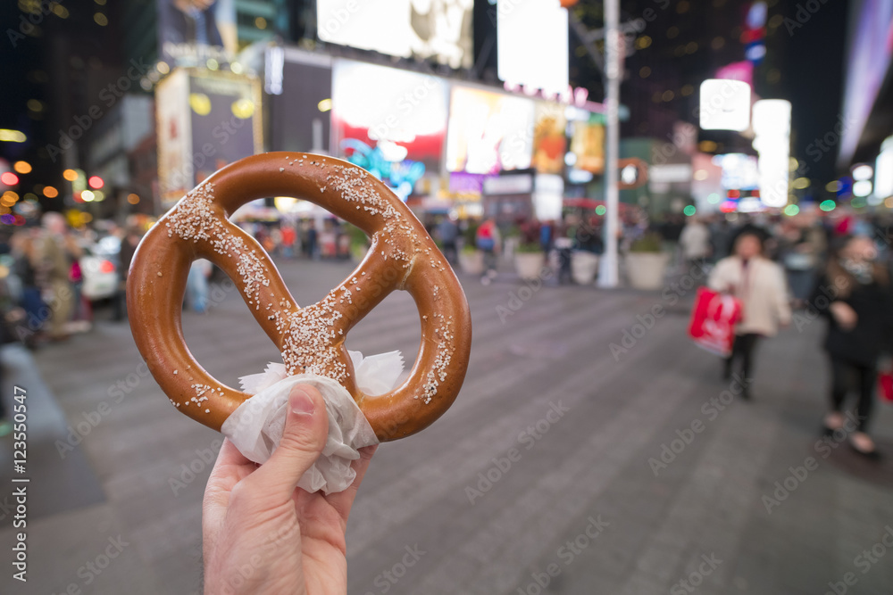
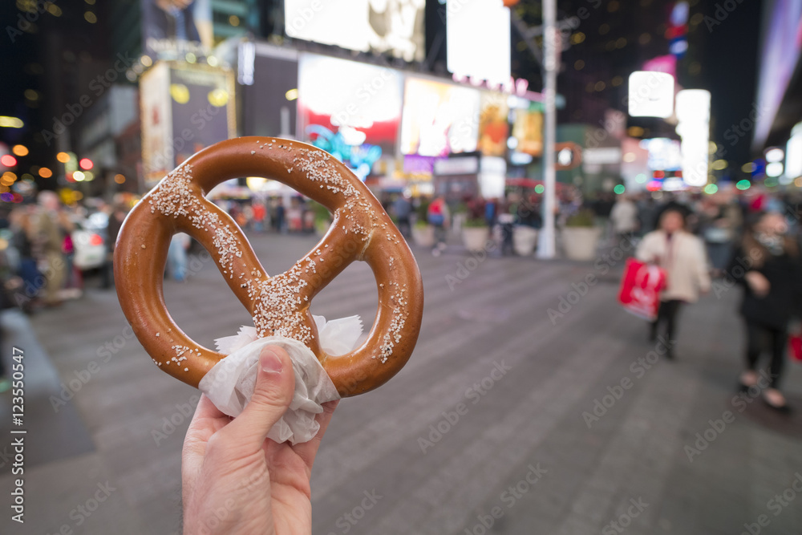
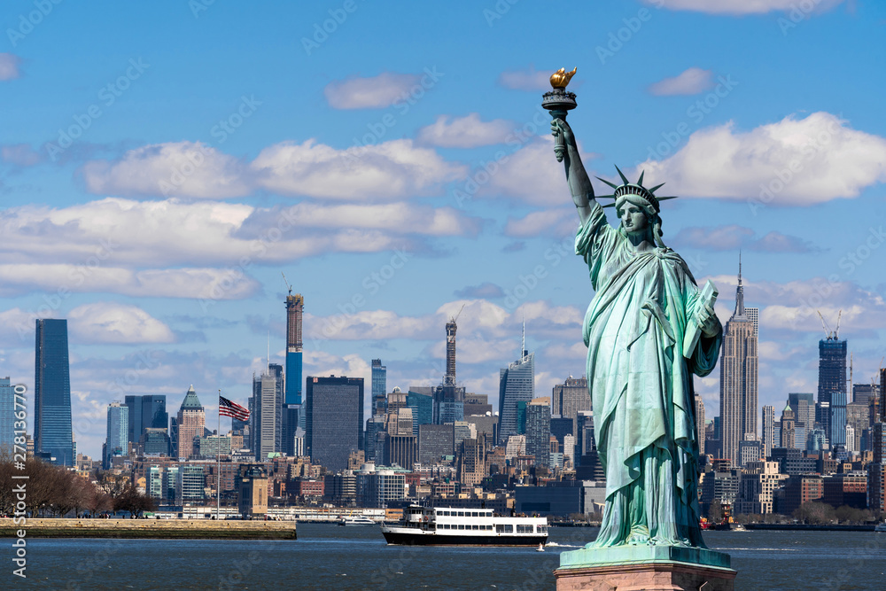
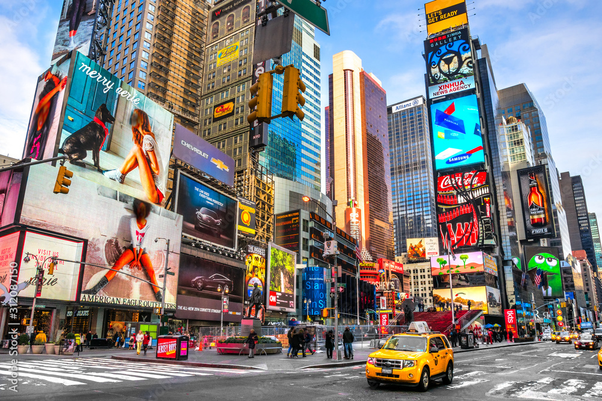
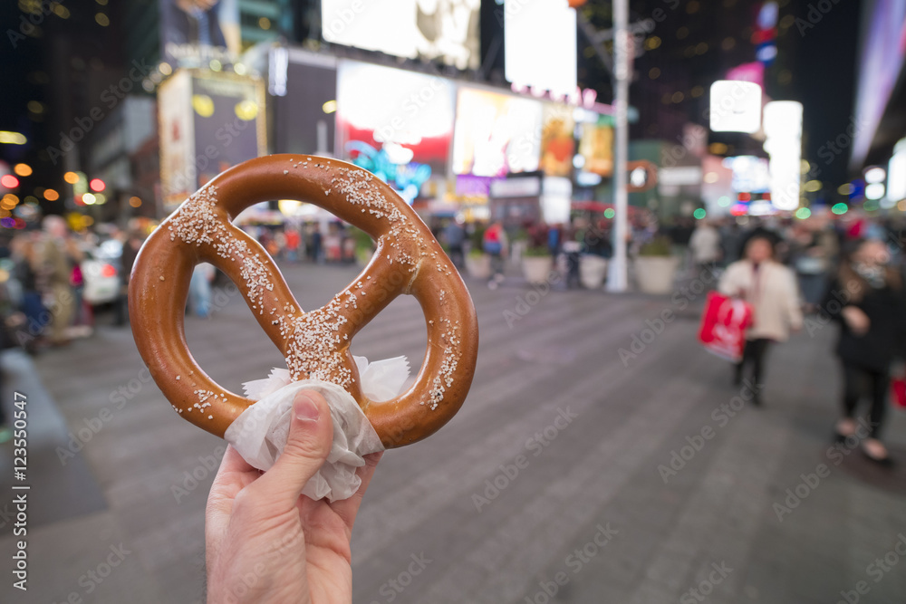

Food Scene
NYC is world-famous for its food. Whether you're looking for dollar-slice pizza, bagels with lox, or cuisine from any culture, the city has it all.
 

New York City is the largest city in the United States and is known as "The City That Never Sleeps." It has five boroughs: Manhattan, Brooklyn, Queens, The Bronx, and Staten Island. Over 8 million people live here, and it's one of the most diverse cities in the world.
Many people come to NYC for work, school, and fun. NYC is also known for its energy and diversity. Over 200 languages are spoken across the city. It’s home to world-famous museums, theaters, universities, and parks.
For more about NYC, visit the official NYC.gov site or check out the I Love NY tourism site.
These places are visited by millions of people each year. You can take a ferry to see the Statue of Liberty or go to the top of the Empire State Building for a view of the city.
 NYC is world-famous for its food. Whether you're looking for dollar-slice pizza, bagels with lox, or cuisine from any culture, the city has it all.

The NYC Subway, buses, taxis, and ferries help over 8 million residents and visitors get where they need to go every day. Many people also like to walk because there’s so much to see on the streets.

Staten Island Ferry

NYC Subway

Yellow Cabs

MTA Bus

Roosevelt Island Tram